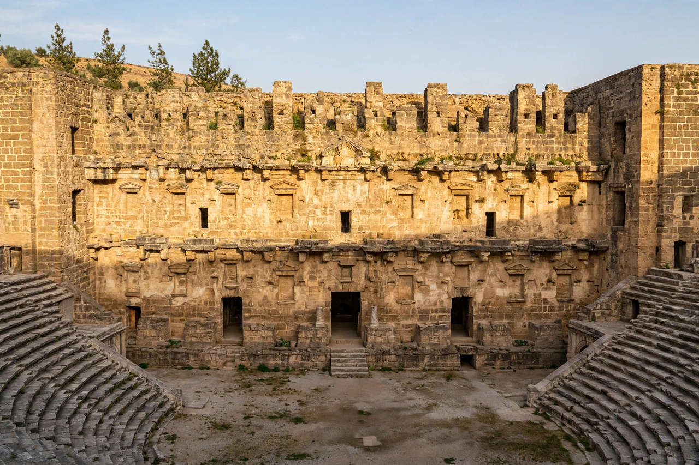

Aspendos
From Wikipedia, the free encyclopedia

Aspendos was an ancient Greco-Roman city in Pamphylia, on the southern coast of present-day Turkey near Antalya, famous above all for its theatre — the best-preserved Roman theatre in the world. Built during the reign of Marcus Aurelius (c. AD 155) by the architect Zeno and paid for by two wealthy brothers, it seats some 12,000–15,000 and, thanks to Seljuk use as a caravanserai and continuous maintenance, retains its stage building nearly intact.
The theatre and city
The theatre's scaenae frons rises some 22 metres with its marble colonnades and pedimented niches; a wooden vaulted gallery ran above the cavea. Legend credits the architect with winning the city's gratitude — and a bride — by engineering the acoustics (still superb: coins dropped on stage are heard in the top rows). Aspendos also preserves a stadium, a basilica, a nymphaeum and one of the finest Roman aqueducts, with its rare inverted-siphon towers marching across the plain.
Use today
The theatre hosts an annual opera and ballet festival and concerts — a living venue whose modern use is debated by conservationists for the wear on the ancient fabric.